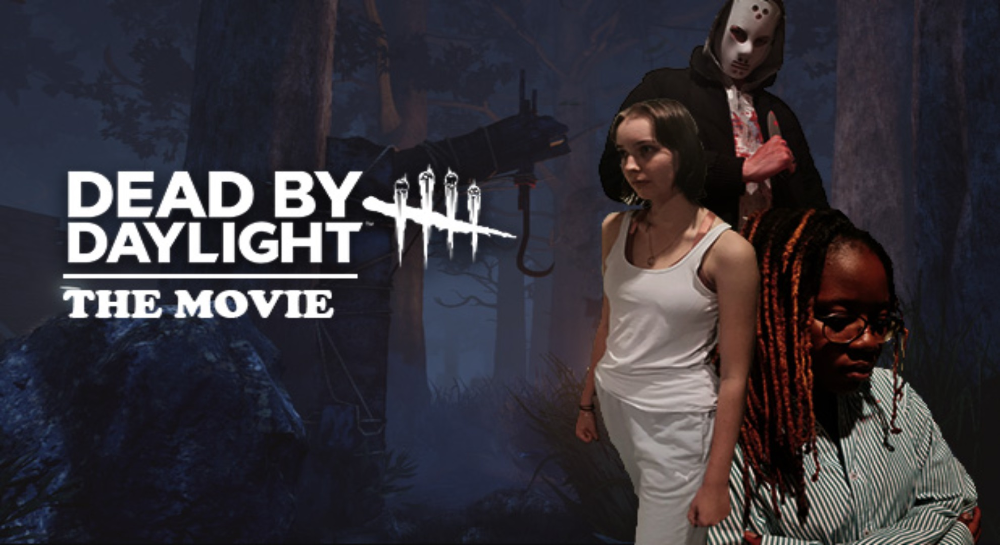
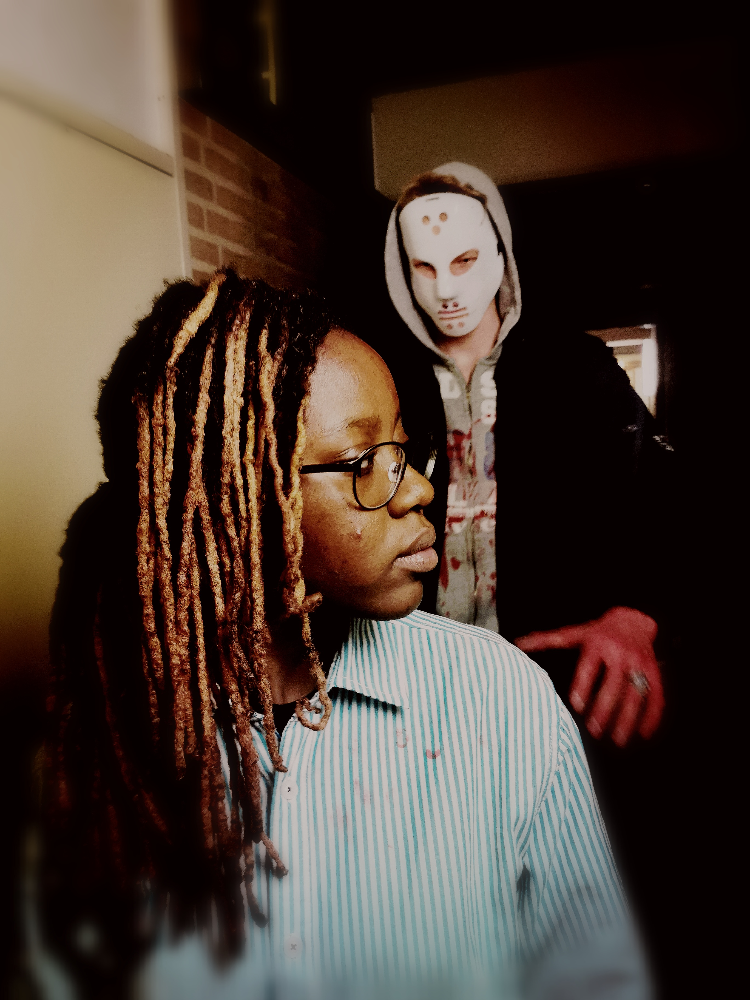

Dead by Daylight: The Movie

Claudette is a normal person with a normal life.
Little did she know that her normality was about to change forever.
My first take on making an interactive trailer, the user will control Claudette Morel in order to help her escape the infamous killer from The Legion.
There are a lot of decisions to make and three endings to unlock... This is, if you don't die along the way. Will you survive?

Script Example: Claudette has been in her new college for a few months now. She has been really interested in the new forum PlantOScience which she decides for the first time to show her face and talk about a new type of flower that was just discovered. She does a couple of tries and does not feel happy about the end result. Someone knocks on her door. Meg wanted to invite Claudette for a run, Claudette doesn’t feel like going. Meg decides to bring up to the conversation about the 2 murderers that occurred near their building. Claudette exposes what happened and expresses her opinion. Meg ends the conversation by telling that she needs to grab some stuff before the run and leaves the room.
The camera focus on Claudette’s face and we find ourselves in another place where Claudette is wounded on her head. We see her hiding from a tall figure, with blood on its hands and wearing a white mask.